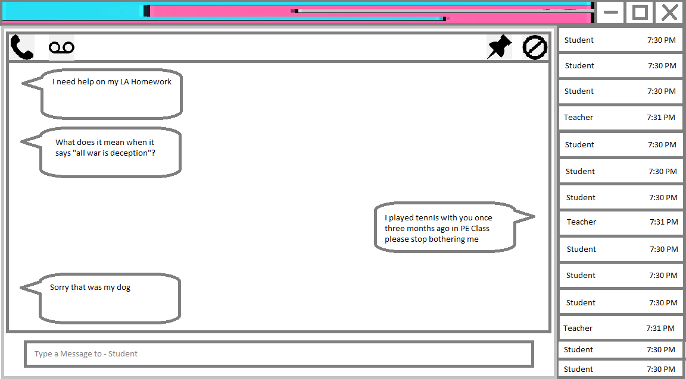

Shown above: our revolutionary chatting technology, allowing students to communicate near-instaneously!
The Social section is one of the four major features of DigiRoom.
Socializing is essential for students. Being able to socialize, especially when everyone is online, can connect students and encourage them to make friends.
The Social section is for student interpersonal interaction with other students. Students can use the Social section to chat and call with other students.
Ever feel like your chat app is running on someone's grandma's Chromebook? DigiRoom chat runs on powerful servers resulting in lowered messaging delay.
Firstly, chats can be created between students, teachers, and can have multiple people inside.
They can be used by students to quickly consult their teachers, or ask another student for help.
Chats include free voice messaging, as well voice calls.
Teachers can configure automatic moderators to check for certain inappropriate phrases or spam and delete them or take other administrative action.
This helps prevent and bullying and harassment.